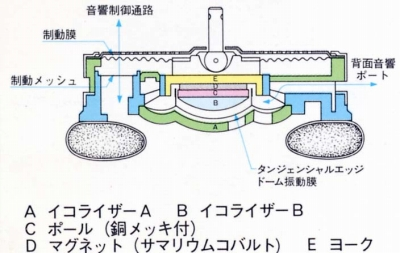
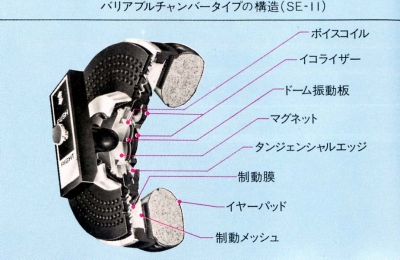

バリアブルチェンバー オープンエア型のドライバーユニットの背面に、自由に震動する制動膜を設け、イヤパッドと耳の間に密閉された空気室（チェンバー）を構成。ダイヤフラムの震動で起こる空気室の圧力変化を制動膜でコントロールし、低域のレベルダウンをおさえる方式。しかも制動膜が外部の音も透過するので、自然な使用感も実現しています。



中口径（35�o前後）のユニットでかなり豊かな低域を実現しますが、現代風の制動の効いた低域ではありません。